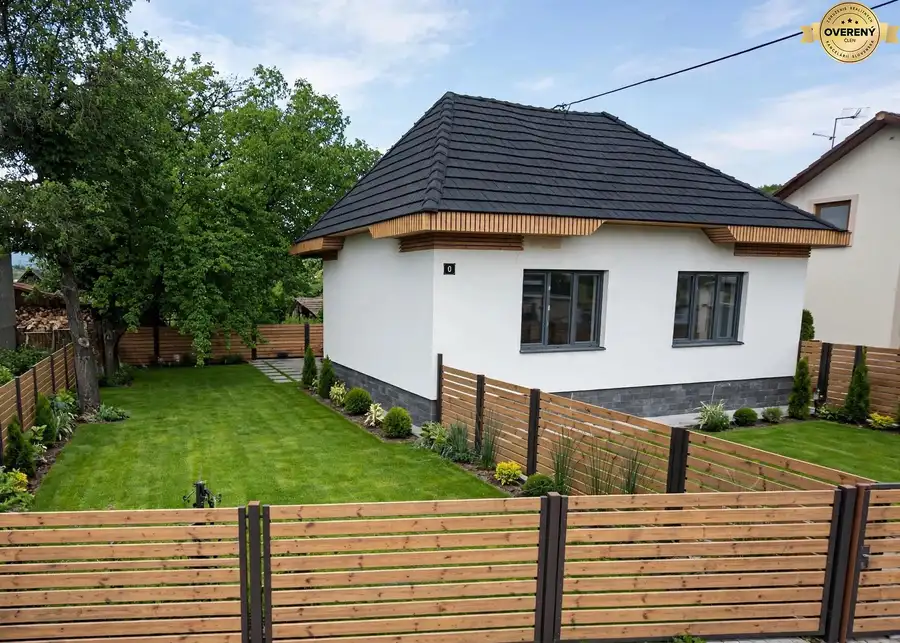
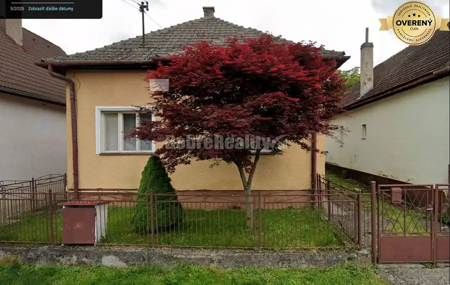
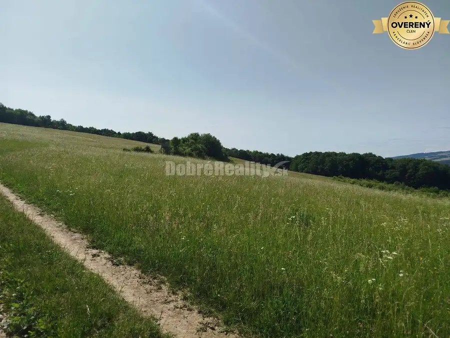

Prenájom komerčného pozemku, Železničná, Železničná, Trenčín
Trenčín
- Plocha3000 m²
- Stavpôvodný
- Vlastníctvoosobné
O nehnuteľnosti
Ponúkame Vám na dlhodobý prenájom kompletne ohradený a zabezpečený areál v krajskom meste Trenčín, ktorý je ako stvorený pre širokú škálu komerčných a prevádzkových činností.
✓ STRATEGICKÁ POLOHA S VÝBORNOU DOSTUPNOSŤOU
Areál sa nachádza v komerčnej zóne Trenčína s veľmi ľahkým prístupom, čo výrazne uľahčuje logistiku a každodenný pohyb Vašich vozidiel či mechanizmov. Krajské mesto Trenčín poskytuje výbornú infraštruktúru, dostupnosť diaľničného spojenia a strategickú polohu v rámci západného Slovenska.
✓ ROZSIAHLY AREÁL S FLEXIBILNOU ROZLOHOU
- Celková disponibilná plocha: až 3 000 m² - Individuálne riešenie podľa Vašich potrieb – prenajmite si presne toľko priestoru, koľko skutočne potrebujete - Rovinatá plocha so štrkových podkladom – ideálna pre parkovanie, skladovanie a prevádzkovú činnosť - Možnosť rozšírenia alebo zmenšenia prenajatej plochy podľa vývoja Vášho podnikania
✓ MAXIMÁLNE ZABEZPEČENIE A OCHRANA MAJETKU
Váš majetok a tovar budú v úplnej bezpečnosti:
- Kompletne oplotený areál s kontrolovaným vstupom - Kamerový bezpečnostný systém fungujúci 24/7 - Chránené pred neoprávneným vstupom a vandalizmom - Ideálne pre dlhodobé skladovanie drahých strojov a mechanizmov
✓ NADŠTANDARDNÉ MOŽNOSTI A VYBAVENIE
Ponúkame Vám viac než len prázdny pozemok:
- Možnosť prenájmu so skladovacím kontajnerom – okamžité riešenie pre Vaše skladovacie potreby - Samostatná prípojka elektrickej energie – pre Vaše prevádzky, nabíjanie vozidiel či napájanie náradia - Flexibilné podmienky prispôsobené charakteru Vašej činnosti
✓ ŠIROKÉ VYUŽITIE PRE RÔZNE TYPY PODNIKANIA
Tento areál je ideálny pre:
- Parkovanie nákladných vozidiel, kamiónov a pracovných strojov - Odstavné plochy pre autoservisy a autopožičovne - Uskladnenie karavanov, obytných vozidiel a prívesov - Stavebné firmy – parkovanie mechanizmov a skladovanie materiálu - Logistické a distribučné spoločnosti - Servisné a opravárenské prevádzky - Komerčné skladovanie tovaru a materiálu - Dopravné spoločnosti – parkovanie vozového parku - A mnoho ďalších podnikateľských aktivít!
✓ VÝHODNÉ CENOVÉ PODMIENKY
Cena prenájmu je stanovená individuálne a zohľadňuje:
- Veľkosť prenajatej plochy - Dĺžku nájomného vzťahu - Dodatočné služby (kontajner, elektrická prípojka)
Čím väčšia plocha a dlhšia doba prenájmu, tým výhodnejšie podmienky!
Sme otvorení rokovaniu a pripravení nájsť riešenie, ktoré bude výhodné pre obe strany.
✓ PREČO SI VYBRAŤ PRÁVE TENTO AREÁL?
Bezpečnosť – kompletné oplotenie + kamerový systém Flexibilita – prenajmite si presne toľko, koľko potrebujete Dostupnosť – ľahký prístup v krajskom meste Infraštruktúra – možnosť elektriny a skladovacích kontajnerov Kvalitný podklad – rovná štrkovaná plocha Individuálny prístup – podmienky šité na mieru
KONTAKTUJTE NÁS EŠTE DNES!
Neváhajte a uchopte túto jedinečnú príležitosť pre Vaše podnikanie! Voľné kapacity sú obmedzené.
Radi Vám poskytneme: - Detailné informácie o areáli - Individuálnu cenovú ponuku - Osobnú prehliadku priestorov - Profesionálne poradenstvo pri výbere vhodnej plochy
ZÁKLADNÉ PARAMETRE NEHNUTEĽNOSTI
Typ nehnuteľnosti Komerčný pozemok v prenájme Lokalita Trenčín – komerčná zóna Celková plocha až 3 000 m² Prístup Ľahký, bez obmedzení Zabezpečenie Oplotenie + kamerový systém Povrch Rovinatá plocha, štrkový podklad Prípojky Možnosť elektrickej energie Cena Podľa rozsahu a dĺžky prenájmu
ZAČNITE PODNIKAŤ NA SPRÁVNOM MIESTE UŽ ZAJTRA!
Tento areál predstavuje ideálne miesto pre rozvoj Vášho podnikania s minimálnymi starosťami o bezpečnosť a infraštruktúru. Všetko, čo potrebujete, je na jednom mieste – stačí sa len nasťahovať a začať!
Nepremeškajte túto výnimočnú ponuku! Kontaktujte nás ešte dnes a dohodnite si nezáväznú obhliadku.
Tento inzerát je určený pre vážnych záujemcov. Všetky podmienky prenájmu vrátane ceny budú predmetom individuálneho rokovania. Tešíme sa na spoluprácu s Vami!
Parametre
| Rozloha pozemku | 3000 m² |
|---|---|
| Úžitková plocha | 3000 m² |
| Vlastníctvo | osobné |
| Stav | pôvodný |
| Voda | studňa |
| El. napätie | 230/400V |
| Plyn | nie |
| Kanalizácia | nie |
| Internet | iné |
| Terén | rovina |
| Dátum zverejnenia | 29. 1. 2025 |
Kde to je
Mohlo by Vás zaujímať

Rodinné domy10 96 000 €Predaj veľkého stavebného pozemku s rodinným domom za cenu pozemku – n Neporadza 120 m² Ponúkame Vám na predaj veľkorysý stavebný pozemok s rodinným domom za cenu samotného pozemku v krásnom a tichom prostredí malebnej obce Neporadza.…
Rodinné domy10 129 000 €Rodinný dom s veľkým pozemkom v tichom a krásnom prostredí pod Považs Selec 3-izbový110 m² Ponúkame Vám na predaj útulný rodinný dom 3+1 s veľkorysým pozemkom v malebnej obci Selec, ktorá sa nachádza v pokojnom a nádhernom prostredí pod…
Záhrady3 8 863 €Na predaj pozemok pod Machnáčom v krásnom horskom prostredí Bielych Ka Drietoma 8863 m² Ponúkame na predaj krásny veľký pozemok o výmere 8063 m2 v k.ú. obce Drietoma , časť Brúsne. Predávaná plocha sa skladá zo štyroch parciel tri z nich…